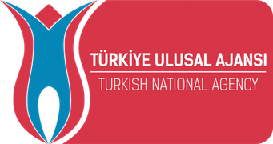
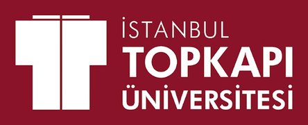

YZ
Yapay Zeka Okulu
Topkapı Üniversitesi · Erasmus+ KA154
● Başvurular açık · Son tarih [gün ay]
Yapay zeka ile
yeni bir başlangıç
Şu an ne okuyorsan ne de çalışıyorsan, buradan başla. On haftada yapay zekayı öğren, fikrini bir girişime çevir, proje yazmayı ve fon bulmayı öğren.
yapay zeka öğrenmek istiyorum, nereden başlarım?
↑
18–29 yaş
Tamamen ücretsiz
Ön bilgi gerekmez
Katılım sertifikalı
On hafta, üç kulvar
Yapay zeka becerileri
01Yapay zekaya girişİlk sohbetin
02Prompt yazmaPrompt defterin
03İçerik ve görsel üretimiKendi afişin
04Kod yazmadan üretimYayında bir site
Girişimcilik ve şirketleşme
05Fikirden iş modelineİş modelin
06Teknokentte şirket kurmaYol haritan
07Sunum ve yatırımcı diliPitch deck'in
Proje yazma ve fon bulma
08Proje döngüsü ve çerçeveProje taslağın
09Hibe programları ve başvuruDolu başvuru
10Bitirme projesiProjen + sertifika
Program bilgileri
Başlangıç
[gün ay 2026]
Süre
8 hafta
Haftada [X] gün
Haftada [X] gün
Yer
Topkapı Üniversitesi
[kampüs]
[kampüs]
Kontenjan
[XX] kişi
QR kodu
buraya yapıştır
(başvuru formu linki)
buraya yapıştır
(başvuru formu linki)
Başvuru ve bilgi
yapayzekaokulu.org
bilgi@yapayzekaokulu.org
[telefon] · @[sosyalmedya]
[telefon] · @[sosyalmedya]




Erasmus+ KA154-YOU · Proje No: [2026-1-TR01-KA154-YOU-XXXXXX]
Avrupa Birliği tarafından ortak finanse edilmektedir. Ancak burada ifade edilen görüş ve düşünceler yalnızca yazar(lar)a aittir ve Avrupa Birliği'nin veya Türkiye Ulusal Ajansı'nın görüşlerini yansıtmak zorunda değildir. Avrupa Birliği ve Türkiye Ulusal Ajansı bunlardan sorumlu tutulamaz.
Avrupa Birliği tarafından ortak finanse edilmektedir. Ancak burada ifade edilen görüş ve düşünceler yalnızca yazar(lar)a aittir ve Avrupa Birliği'nin veya Türkiye Ulusal Ajansı'nın görüşlerini yansıtmak zorunda değildir. Avrupa Birliği ve Türkiye Ulusal Ajansı bunlardan sorumlu tutulamaz.